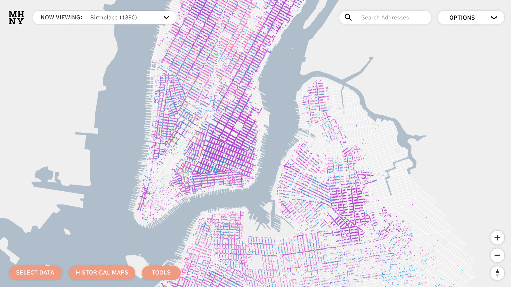
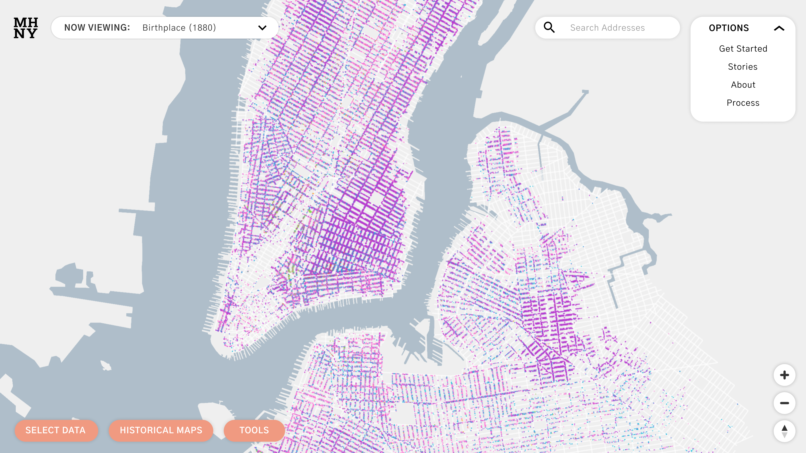

OPTIONS button and MHNY logo
Now that the splash page introduces the name of the project to the user, I replaced the original, longer logo with an smaller existing MHNY logo, thus reducing space and clutter.
I also consolidated the options Get Started, Stories, About, Process into one drop down menu, labeled Options. I shrunk down the search bar and put this button next to it, effectively eliminating the header and creating more space to view more of the map.



Map page designs, Figma mockup